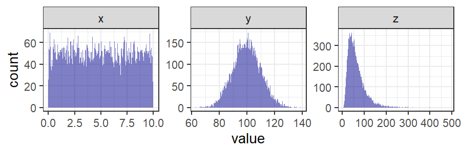
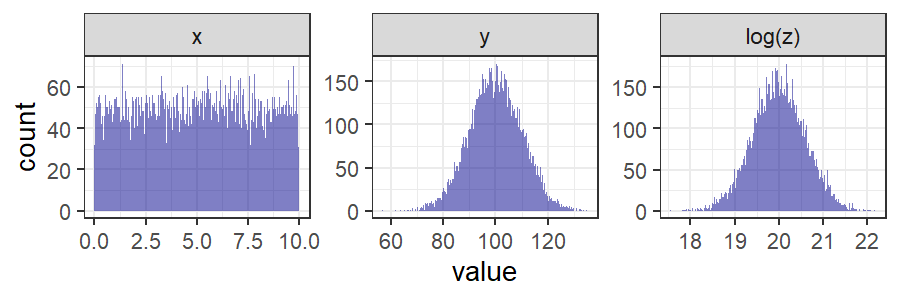
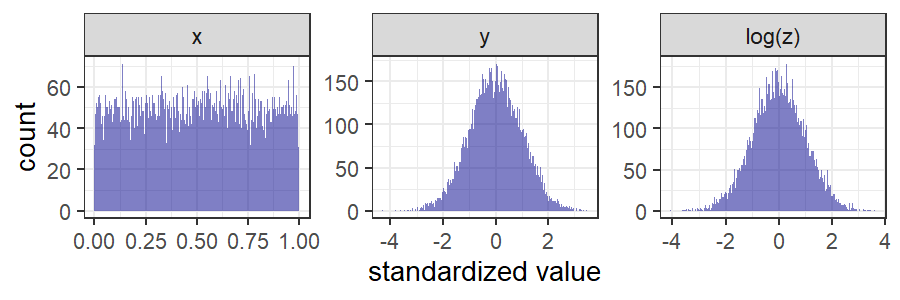
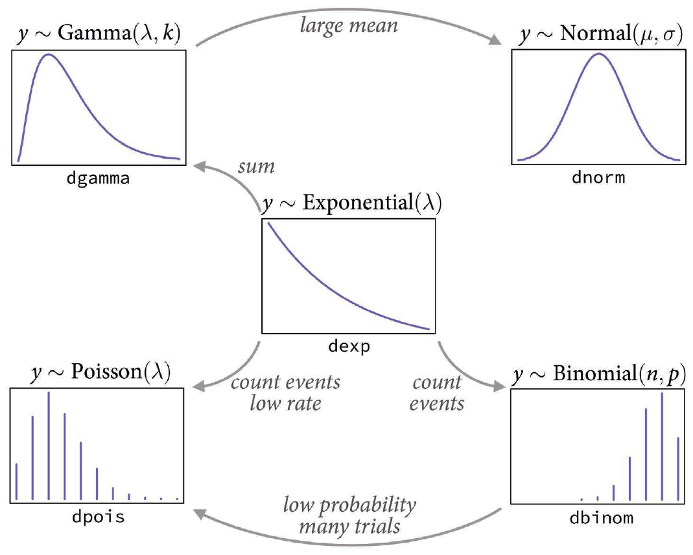
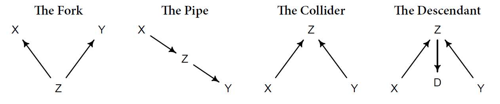
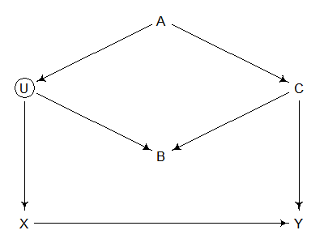

Standardizing:
\[ x_{\text{std}} = \frac{x - \bar x}{\sigma_x} \]
If you want zero to be meaningful:
\[ x_{\text{scaled}} = \frac{x}{x_{\text{max}}} \]
General rules:



Regression Equation:
\[ \begin{align} Y &\sim L(\Theta, X) \end{align} \]
Example:
\[ \begin{align} y &\sim \text{Normal}(\mu, \sigma) \\ \mu &= \alpha + \beta x \end{align} \]

Analyze relationships between variables
Four fundamental types of confounding relationships:

General rules:
Example (Section 6.4.2)

dagitty’s
impliedConditionalIndependencies() function is your
friend.Bayes’s Theorem:
\[ P(\theta|D) = \frac{P(D|\theta) \times P(\theta)}{P(D)}, \] where
Data is grouped into clusters
Hyperpriors and hyperparameters:
Single-level model
\[ \small \begin{align} Y &\sim \text{Normal}(\mu, \sigma) \\ \mu &= \alpha + \beta X \\ \alpha &\sim \text{Normal}(0, 1) \\ \beta &\sim \text{Normal}(0, 1) \\ \sigma &\sim \text{Exponential}(1) \\ \end{align} \]
Two-level model (varying intercept)
\[ \small \begin{align} Y &\sim \text{Normal}(\mu, \sigma) \\ \mu &= \alpha + \beta X \\ \alpha &\sim \text{Normal}(\bar \alpha, \sigma_\alpha) \\ \beta &\sim \text{Normal}(0, 1) \\ \bar \alpha &\sim \text{Normal}(0, 1) \\ \sigma &\sim \text{Exponential}(1) \\ \sigma_\alpha &\sim \text{Exponential}(1) \\ \end{align} \]
Two-level model (varying intercept & slope)
\[ \small \begin{align} Y &\sim \text{Normal}(\mu, \sigma) \\ \mu &= \alpha + \beta X \\ \alpha &\sim \text{Normal}(\bar \alpha, \sigma_\alpha) \\ \beta &\sim \text{Normal}(\bar \beta, \sigma_\beta) \\ \bar \alpha &\sim \text{Normal}(0, 1) \\ \bar \beta &\sim \text{Normal}(0, 1) \\ \sigma &\sim \text{Exponential}(1) \\ \sigma_\alpha &\sim \text{Exponential}(1) \\ \sigma_\beta &\sim \text{Exponential}(1) \\ \end{align} \]
\(\bar\alpha\), \(\bar\beta\), \(\sigma_\alpha\), \(\sigma_\beta\) are hyperparameters
Two-level model (correlations between slope and intercept)
\[ \small \begin{align} Y &\sim \text{Normal}(\mu, \sigma) \\ \mu &= \alpha + \beta X \\ \begin{bmatrix} \alpha \\ \beta \end{bmatrix} &\sim \text{MVNormal}\begin{pmatrix} \begin{bmatrix} \bar \alpha \\ \bar \beta \end{bmatrix}, S \end{pmatrix} \\ S &\sim \begin{pmatrix} \sigma_\alpha & 0 \\ 0 & \sigma_\beta \end{pmatrix} R \begin{pmatrix} \sigma_\alpha & 0 \\ 0 & \sigma_\beta \end{pmatrix} \\ \bar \alpha &\sim \text{Normal}(0, 1) \\ \bar \beta &\sim \text{Normal}(0, 1) \\ \sigma &\sim \text{Exponential}(1) \\ \sigma_\alpha &\sim \text{Exponential}(1) \\ \sigma_\beta &\sim \text{Exponential}(1) \\ R & \sim \text{LKJCorr}(2) \end{align} \]
Two main approaches:
quap())
R-INLA package for Rulam() from the
rethinking packagebrms package is much more
powerful
stan programming language can helprhat, bulk_ess, and other diagnostic
measuresstan sampler